A/B 결과
읽는 법
표본 변동 · p값 · 효과 크기 · 신뢰구간
비전공자를 위한 결과 해석과 AI 검증
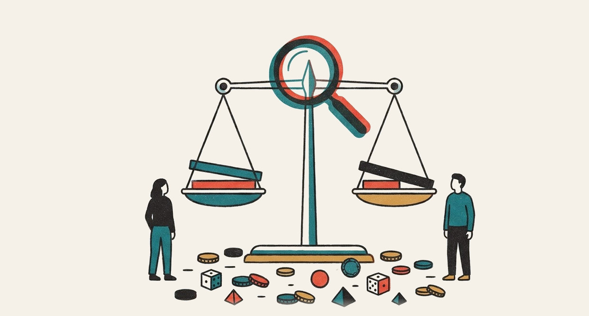
효과가 확실한가?
효과가 없을 확률이 3%인가?
학습 목표
1해석
표본 변동 · p값의 정확한 뜻
오해 3종 구분
효과 크기와 신뢰구간 읽기
2판단
다중 비교 · 중간 확인의 위험
보고 4종으로 주장 범위 결정
도입 · 보류 · 재실험 판단
3검증
«유의미합니다» 단정 AI 답변 재요청
손계산으로 결과 대조
효과 0 데이터로 거짓 양성 체험
차이가 보일 때
먼저 의심할 것
표본 변동 → p값 → 효과 크기 → 신뢰구간 → 반복의 함정
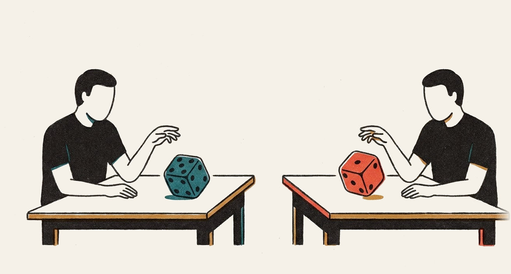
10주 학식 쿠폰 실험 결과 도착
| 버전 | 문구 | 배정 인원 | 클릭 | 클릭률 |
|---|---|---|---|---|
| A | «쿠폰 받기» | 4,205명 | 422명 | 10.04% |
| B | «오늘 점심 500원 아끼기» | 4,195명 | 486명 | 11.59% |
같은 조건을 반복해도 결과는 변동
주사위 : 같은 주사위 60번 → 6이 나온 횟수 사람마다 상이 · 주사위 차이 아님
A/A 실험 : 똑같은 버튼 2개 비교 (집단당 500명)
| 회차 | 1 | 2 | 3 | 4 | 5 | 6 | 7 | 8 |
|---|---|---|---|---|---|---|---|---|
| 차이 | +1.0 | −0.2 | +2.2 | −1.0 | +1.0 | −0.8 | −2.6 | −3.0 |
효과 0 인데도 3점 차이 발생
표본이 클수록 우연의 폭 감소
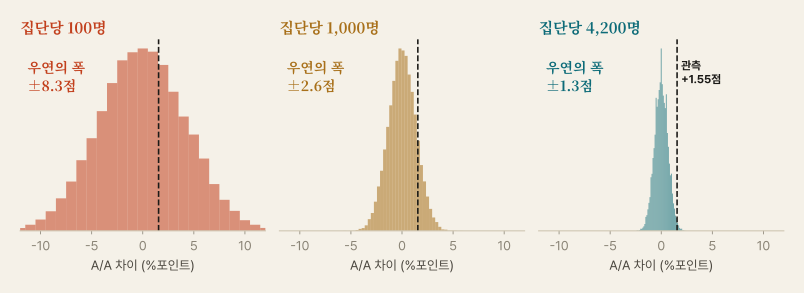
p값 비유 : 콜라 맞히기
친구의 주장 : «콜라 두 브랜드 구분 가능»
- 8잔 중 4잔씩 무작위 제공 · 친구도 4잔씩임을 인지
- 친구가 8잔 전부 정답
반대 입장에서 계산
- 가정 : 친구는 구분 못 함 = 찍기
- 4잔 고르는 경우의 수 = 70가지
- 전부 정답 = 1가지 → 1.4%
찍기로는 드문 결과 → «찍기» 가정 의심
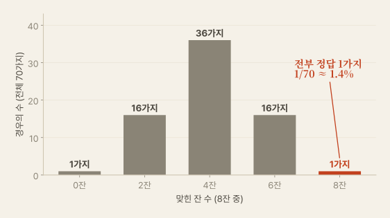
p값의 정의
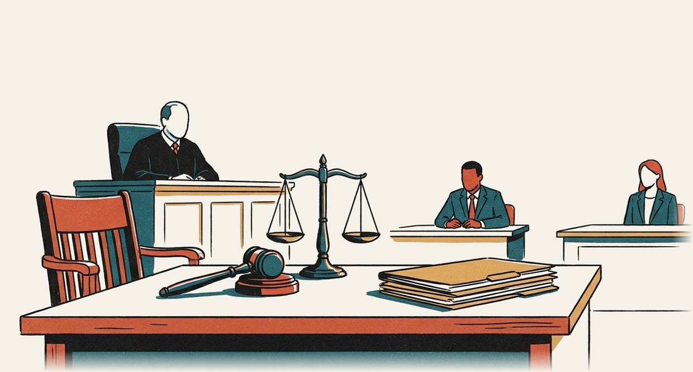
차이가 없다고 가정했을 때
지금만큼 또는 더 큰 차이가 나올 확률
| 재판 | A/B 테스트 |
|---|---|
| 무죄 추정 | 귀무가설 : 차이 없음 |
| 증거 수집 | 실험 데이터 |
| 무죄라면 이런 증거가 나올 확률 | p값 |
| 유죄 판결 | 귀무가설 기각 (유의) |
| 증거 불충분 ≠ 결백 입증 | 유의하지 않음 ≠ 효과 없음 |
효과 0 세계를 직접 만들어 본 결과
수식으로 그린 같은 그림
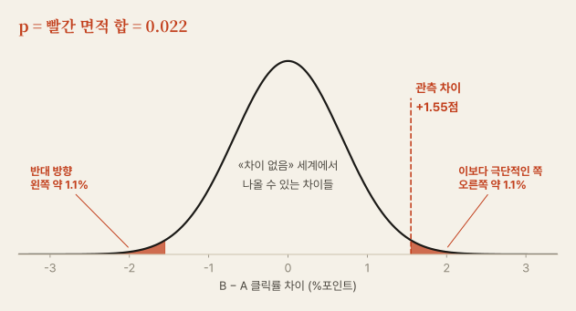
손계산 : 5주 z-점수의 응용
| # | 단계 | 계산 |
|---|---|---|
| 1 | 전체 클릭률 | (422+486) / 8,400 = 10.81% |
| 2 | 우연의 크기 (표준오차) | √[0.1081 × 0.8919 × (1/4205 + 1/4195)] = 0.678점 |
| 3 | z값 | 1.55 ÷ 0.678 = 2.29 |
| 4 | p값 (양측) | z 표 또는 AI 계산 → 0.022 |
5주와 같은 구조
z-점수 =
(값 − 평균) ÷ 표준편차
A/B z값 =
(관측 차이 − 0) ÷ 표준오차
«우연의 눈금 몇 칸 떨어졌는가»
흔한 오해 3종 : 전부 오답
| 오해 | 실제 |
|---|---|
| «p = 0.03 → 효과가 없을 확률 3%» | «효과 없음»을 참으로 가정하고 계산한 값 가설이 참일 확률 계산 아님 |
| «p가 작을수록 효과가 큼» | 표본이 크면 작은 효과도 p 작음 효과 크기는 별도 확인 |
| «p = 0.03 → 다시 하면 97% 재현» | 재현 확률 아님 재현은 추가 실험으로 확인 |
도입 질문 답 : 확실성 보증 아님 · «차이 없음» 가정 아래 드문 결과일 뿐
0.05 : 자연법칙이 아닌 관행
| 결과 | 기계적 판정 | 실제 증거 차이 |
|---|---|---|
| p = 0.049 | 유의 | 거의 동일 |
| p = 0.051 | 비유의 |
| 분야 | 흔한 기준 |
|---|---|
| 사회과학·제품 실험 | 0.05 |
| 유전체 전장 분석 | 5 × 10⁻⁸ |
| 입자 물리학 발견 | 5σ (약 3 × 10⁻⁷) |
| 불 없음 | 불 있음 | |
|---|---|---|
| 경보 울림 | 1종 오류 거짓 양성 (α) | 정상 탐지 검정력 (1−β) |
| 경보 조용 | 정상 | 2종 오류 거짓 음성 (β) |
화재경보기 : 민감하게 설정 → 오작동 증가 · 둔하게 설정 → 화재 놓침
유의함과 중요함은 별개
집단 100만 명 실험
| A 클릭률 | 10.0% |
| B 클릭률 | 10.1% |
| 차이 | +0.1점 |
| p값 | 0.019 (유의) |
거대한 현미경 : 개미도 선명하게 포착 · 개미 크기와 무관
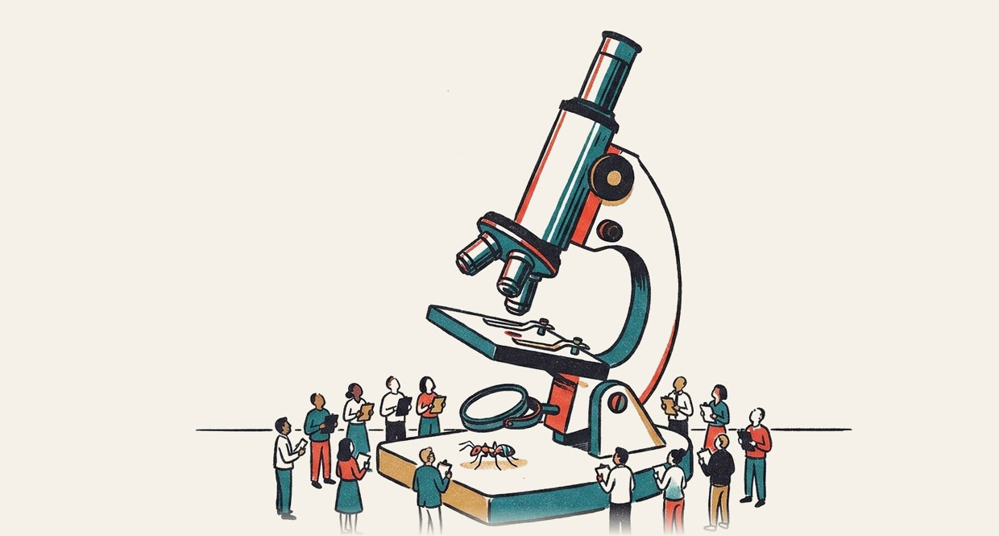
결과의 네 가지 조합
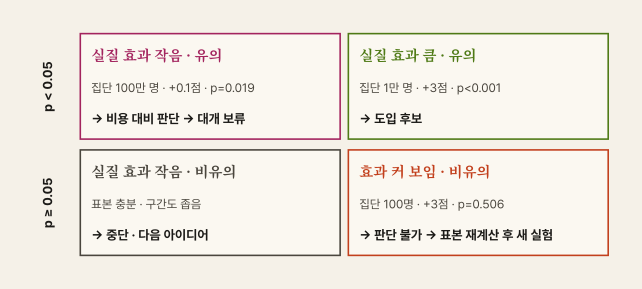
신뢰구간 : 한 점이 아닌 범위로 말하기
그물 낚시 : 작살 한 번(점 추정)보다 그물(구간)의 포착 가능성 큼 · 그물이 넓을수록 불확실성 큼
- 0 미포함 → p < 0.05 와 같은 판단
- 폭 → 추정의 정밀도
- 하한·상한 → 데이터와 잘 맞는 효과 범위 · 구간 밖일 가능성도 남음
«95%»의 뜻 : 같은 방법을 20번 반복
표본과 효과에 따라 달라지는 구간
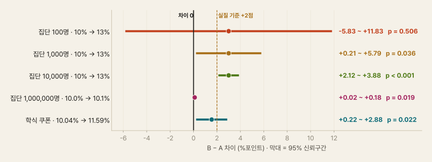
다중 비교 : 많이 쏘면 언젠가 명중
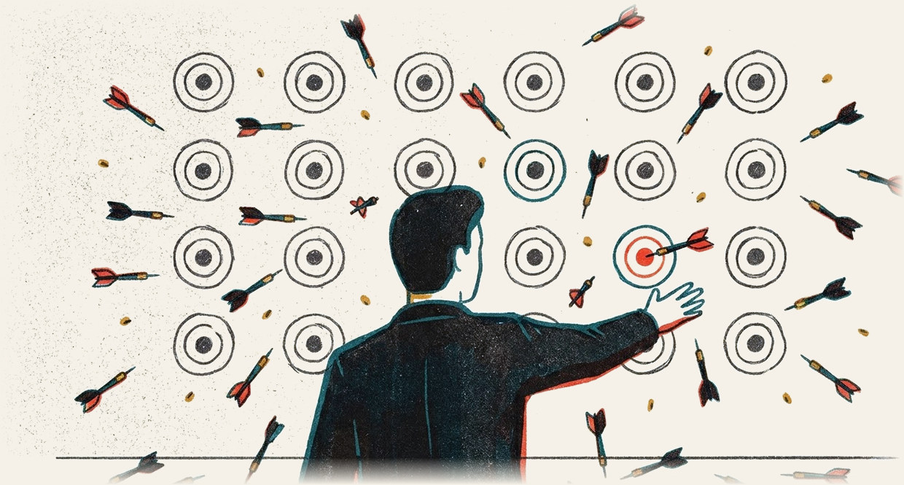
과녁 20개에 다트 투척 : 맞힌 과녁 하나만 보여 주면 명사수처럼 보임
| 검정 지표 수 | 우연 유의 기대 | 1개 이상 발생 (지표 독립 시) |
|---|---|---|
| 1개 | 0.05개 | 5% |
| 5개 | 0.25개 | 23% |
| 20개 | 1개 | 64% |
간단 보정 (본페로니) : 0.05 ÷ 지표 수 → 20개면 기준 0.0025
효과가 0이어도 지표를 늘리면 무언가는 «유의»
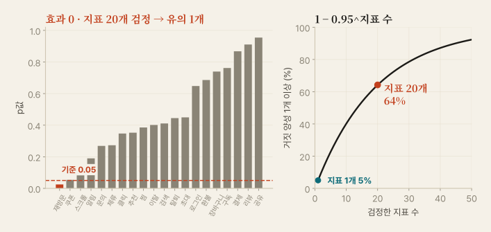
중간 확인 : 이기는 순간 휘슬 불기
축구 경기 : 우리 팀이 앞설 때마다 경기 종료 가능 → 약팀도 승률 상승
- 실험 중 p값은 오르내림이 자연스러운 현상
- 0.05 아래로 들어온 순간 종료 → 거짓 양성 누적
- 학식 쿠폰 p값 : 8일 차 0.035 → 10일 차 0.052 → 14일 차 0.022
대시보드 시청은 가능 · 그 값으로 종료 결정 금지
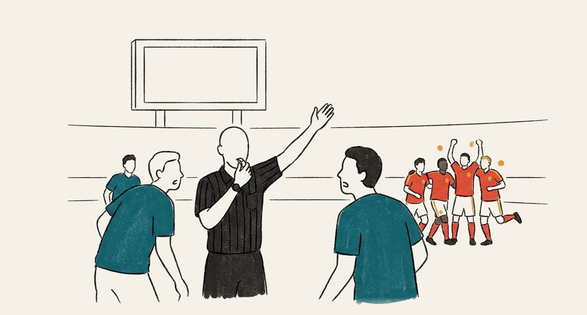
효과 0 실험 40개를 매일 들여다보면
확인 횟수별 거짓 양성
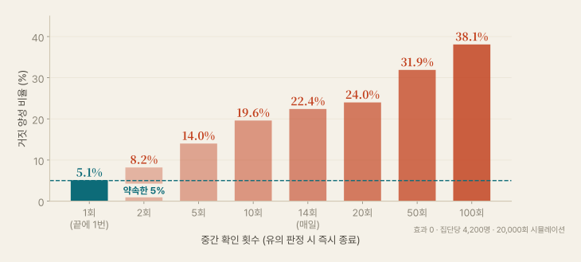
3주 연결 : 결측을 평균으로 채우면 쉬워지는 «유의»
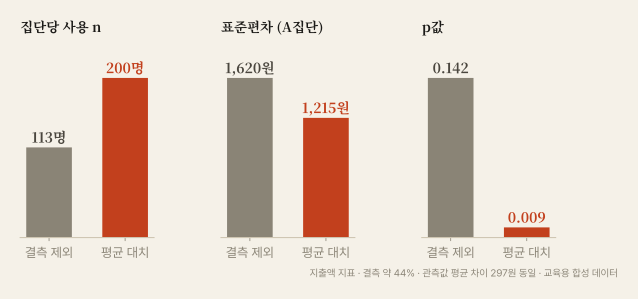
유의성 시뮬레이터
결과를
보고하고 결정하기
보고 4종 · 판단 문장 · 도입 결정표

보고 4종
| 항목 | 왜 필요한가 | 학식 쿠폰 앱 |
|---|---|---|
| 효과 크기 | 실제로 얼마나 다른가 | +1.55점 (10.04% → 11.59%) |
| 신뢰구간 | 얼마나 불확실한가 | 95% CI +0.22 ~ +2.88점 |
| n | 근거의 크기 | A 4,205명 · B 4,195명 |
| 검정 횟수 | 우연 유의 가능성 | 주 지표 1개 · 기간 종료 후 1회 |
p = 0.022 는 위 네 줄의 보조 정보 · 단독 보고 금지
판단 문장 고치기
단정
«p<0.05 이므로 B가 확실히 더 좋습니다.»«유의하지 않으므로 효과가 없습니다.»
«차이가 우연일 확률은 2.2%입니다.»
주장 범위 명시
«14일 · 8,400명 실험에서 B의 클릭률이 1.55점 높게 관측 (95% CI +0.22~+2.88).»«이번 표본으로는 차이를 확인하지 못함. 효과 없음 입증은 아님.»
«차이 관측 · 실질적 의미는 별도 판단.»
확증 결과와 탐색 결과
확증 결과
사전 등록한 주 지표 1개
기간 종료 후 1회 검정
보고 문구 : «확증 분석»
예 : 클릭률 차이 +1.55점
탐색 결과
실험 후 찾아낸 지표·세부 집단
유의해도 다음 실험의 가설로만 사용
보고 문구 : «탐색 분석 · 재검증 필요»
예 : «4학년 모바일에서 효과 큼»
모의고사 복습 : 틀린 유형 발견(탐색) → 다음 시험에서 확인(확증) · 복습 중 발견을 실력 향상의 증거로 제출 불가
도입 결정표
| 신뢰구간 위치 | 예 (실질 기준 +2점) | 결정 | 다음 행동 |
|---|---|---|---|
| 전부 실질 기준 위 | +2.1 ~ +3.9 | 도입 | 단계적 배포 · 지표 모니터링 |
| 0 위 · 실질 기준 걸침 | +0.22 ~ +2.88 | 비용 따라 결정 | 저비용이면 도입 · 고비용이면 재실험 |
| 0 위 · 실질 기준 아래 | +0.02 ~ +0.18 | 보류 | 더 큰 변화 탐색 |
| 0 걸침 · 폭 넓음 | −5.8 ~ +11.8 | 판단 불가 | 표본 재계산 후 새 실험 |
| 0 걸침 · 폭 좁음 | −0.2 ~ +0.3 | 중단 | 다음 아이디어 |
| 전부 0 아래 | −2.6 ~ −0.1 | 폐기 | 원인 탐색 |
검산 연습 : 이 보고서를 믿어도 되는가
받은 보고서 (AI 또는 교재)
A : 1,000명 중 50명 구매 (5.0%)
B : 1,000명 중 58명 구매 (5.8%)
«p = 0.04 · 우연일 확률 4% 미만
16% 상승 · 도입 결정»
직접 계산
표준오차 1.01점 · z = 0.79
p = 0.43 · 95% CI −1.18 ~ +2.78점
판단 불가 · 표본 부족
5% → 6% 검출 필요 표본 집단당 약 8,158명
p값 숫자도 해석 문장도 오류 · AI가 쓴 p값은 원자료로 재계산 필수
p<0.05 단정
«유의미한 차이가 있습니다» 한 줄의 위험
질문이 답을 결정
단문 요청
> 이 A/B 결과 유의미해?흔한 응답
«p값이 0.022로 0.05보다 작으므로 통계적으로 유의미한 차이가 있습니다. B안을 적용하는 것이 좋습니다.»
효과 크기 · 신뢰구간 · 검정 횟수 · 가드레일 누락
명세 요청
> ab_result.csv의 A/B 결과 분석.사전 등록 주 지표는 clicked 1개.
두 비율 차이 · 95% CI · n · z · 양측 p · 계산식을 표로.
left_app는 가드레일로 별도 표기.
«유의미» 대신 실제 차이와 범위로 서술.
중간 확인 여부를 나에게 질문.
왜 생기고 어떻게 찾는가
원인
- 예·아니오형 질문 → 이분법 답변
- 보고 항목 미지정
- 실험 이력(검정 횟수·중간 확인)을 AI가 모름
- 계산 없이 문장만 생성한 수치 가능
진단 체크
- 효과 크기·신뢰구간·n·검정 횟수 존재?
- 사용한 코드와 중간 집계표 존재?
- 손계산 또는 다른 도구 결과와 일치?
- 중간 확인·지표 선택 이력 기재?
AI에 맡길 일 = 계산 · 사람이 맡을 일 = 실험 이력 제공과 결론의 범위 결정
결과 해석
실습
모의 결과 검정 → 단정 재현 → 재요청 → 거짓 양성 체험
이번 주 명세
[목표]
ab_result.csv의 A/B 결과를 보고 4종으로 정리하고 주장 가능 범위를 한 문단으로 작성
[제약]
- 주 지표 clicked 1개만 확증 분석 · 나머지 지표와 세부 집단은 탐색 결과로 표기
- «유의미합니다» «확실합니다» 표현 금지 · 실제 차이와 범위로 서술
- 분석 코드와 중간 집계표 함께 제출
[검증 조건]
- 배정 인원 · 클릭 수를 원본에서 다시 집계해 표기
- 차이 · 95% 신뢰구간 · z · 양측 p · 검정 횟수 표기
- 내 손계산 결과와 소수 둘째 자리까지 대조
- left_app를 가드레일로 별도 비교
- 마지막 줄 : 이 실험으로 주장할 수 없는 것 한 줄
[비목표]
- 그래프 꾸미기, 예측 모델, 인과 메커니즘 추측
오늘의 실습 — 50분
| # | 활동 | 개념 |
|---|---|---|
| 1 | ab_result.csv로 검정 요청 · 손계산 대조 | 기본 절차 |
| 2 | «유의미한가?» 단문 요청 → 결과 저장 | 함정 #9 |
| 3 | 보고 4종 명세로 재요청 → 2번과 비교 | 보고 항목 |
| 4 | ab_null.csv 분석 · 효과 0 실험 1,000회 시뮬레이션 | 거짓 양성 |
| 5 | 확장 : 일별 누적 p값 그래프 · 첫 유의 시점 찾기 | 조기 종료 |
검산값 : AI 결과와 대조
| 파일 | A | B | 차이 | 95% CI | z | p (양측) |
|---|---|---|---|---|---|---|
| ab_result.csv | 422 / 4,205 | 486 / 4,195 | +1.55점 | +0.22 ~ +2.88 | 2.29 | 0.022 |
| ab_null.csv | 433 / 4,177 | 380 / 4,223 | −1.37점 | −2.63 ~ −0.10 | −2.12 | 0.034 |
ab_null.csv : A·B 모두 10%로 생성한 파일인데 «유의»
실제 효과 0 · 거짓 양성 실물 · 효과 0 실험의 약 5%에서 발생
data/make_ab.py · 시드 고정 · 교육용 합성 데이터 · 5번 확장 : ab_null도 1~3일 차 p < 0.05 → 조기 종료였다면 잘못된 결론실무용 한 쪽 보고서
B 문구 클릭률 +1.55점 · 저비용 변경으로 도입 권고
실험 : 학식 쿠폰 화면 · 14일 · 재학생 8,400명 무작위 배정 (주 지표 사전 등록)
결과 : A 10.04% → B 11.59% · 95% CI +0.22 ~ +2.88점 · 검정 1회
부작용 : 앱 종료율 A 29.9% · B 30.4% · 차이 +0.48점 (95% CI −1.49 ~ +2.44) · 악화 미확인, 배제 불가
판단 : 효과 방향 양호 · 실질 기준 +2점 달성 여부 불확실 · 문구 변경 비용 거의 없음
다음 : 90% 배포 · 10% A 유지 2주 · 클릭 후 실제 쿠폰 사용률 추가 확인
한계 : 이번 학기 · 이 앱 사용자 범위 · 점심 외 시간대 일반화 불가
제목 쓰는 법
| A/B 테스트 결과 보고 |
| B 문구 +1.55점 · 저비용 도입 권고 |
AI 활용 범위
- 초안 문장 다듬기
- 표 형식 정리
- 수치·결론은 사람이 최종 확인
공식 과제 : 결과 해석 연습
| 결과표 | A | B | 추가 정보 | 서술할 것 |
|---|---|---|---|---|
| 1 | 100 / 1,000 | 130 / 1,000 | 주 지표 · 종료 후 1회 | 유의 여부 · 구간 폭 · 결정 |
| 2 | 10 / 100 | 13 / 100 | 같은 비율 · 표본만 작음 | 1번과 달라지는 판단 |
| 3 | 100,000 / 1,000,000 | 101,000 / 1,000,000 | 구현 비용 큼 | 유의성과 실질 효과 |
| 4 | 지표 20개 | 1개만 p=0.03 | 사후 선택 | 다중 비교와 문구 |
| 5 | 3일 차 p=0.04 | 14일 차 p=0.21 | 3일 차에 보고 예정 | 중간 확인 문제 |
10~11주 전체 절차
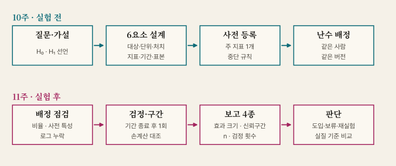
한 장 요약
| 개념 | 핵심 |
|---|---|
| 표본 변동 | 효과 0에서도 차이 발생 · 표본이 클수록 우연의 폭 감소 |
| p값 | 차이 없음을 가정할 때 지금 이상의 차이가 나올 확률 |
| 오해 3종 | 효과 없을 확률 아님 · 효과 크기 아님 · 재현 확률 아님 |
| 0.05 | 관행적 기준 · 사전 고정 · 0.049와 0.051의 증거 차이 미미 |
| 효과 크기 · 신뢰구간 | 유의 여부보다 크기와 범위 · 표본 100만 명의 +0.1점 사례 |
| 다중 비교 | 지표 20개 → 우연 유의 기대 1개 · 1개 이상 발생 64% |
| 중간 확인 | 매일 확인 후 종료 → 거짓 양성 약 22% · 기간 사전 고정 |
| 보고 4종 | 효과 크기 · 신뢰구간 · n · 검정 횟수 · 확증/탐색 구분 |
| AI 함정 #9 | p<0.05 단정 → 보고 항목 지정 · 코드 요구 · 원자료 재계산 |
데이터 기반 의사결정과 윤리
실험 결과를 쓰는 책임 · 지표의 왜곡 · 개인정보
AI 함정 #10 개인정보 그대로 출력